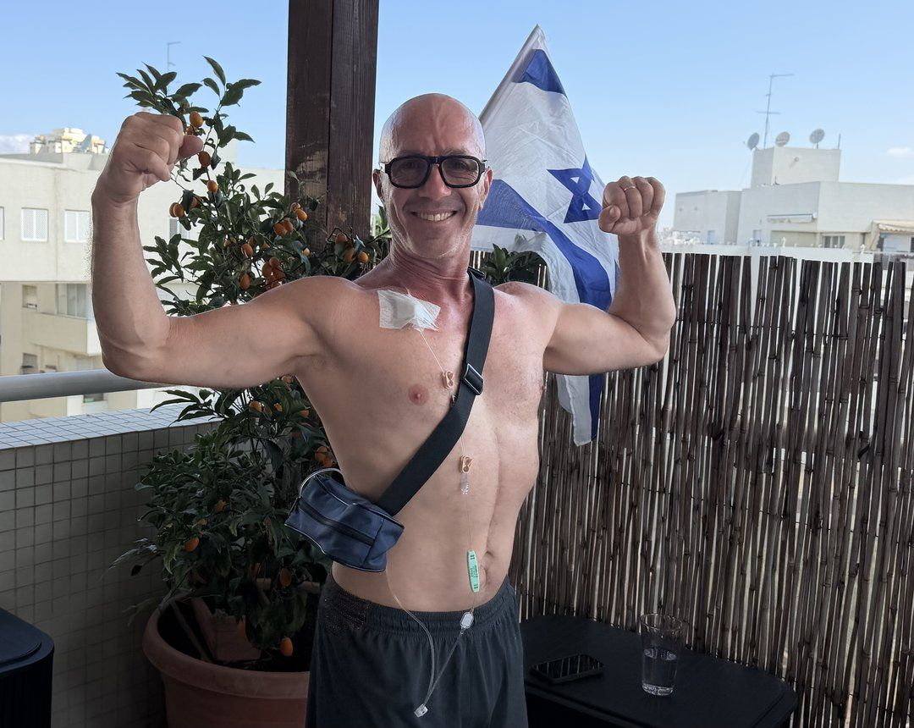
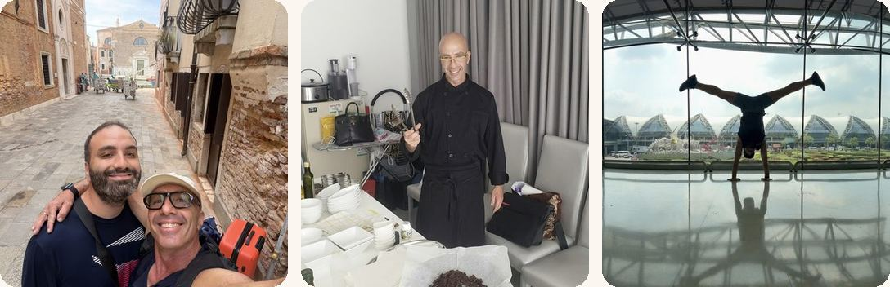

איך מרימים את הראש כשהחיים מתהפכים בשנייה

לפני שנה, בחופשה בתאילנד, התחילו כאבי בטן חזקים. חשבתי שזה קלקול קיבה. חזרנו לארץ, הגעתי לרופאת המשפחה, ותוך יום אחד עברתי מסופרמן שיכול הכל לחולה סרטן.
כילד ראיתי את המחלה הזאת לוקחת בני משפחה צעירים. הפחד הישן ההוא הפך פתאום לחיים שלי.
הומור, תנועה, בישול ונסיעות.

היום אני מעביר פעילות גופנית לקשישים. ובכל פעם שאני מגיע לבית החולים לטיפול כימותרפי, אני עובר בין המטופלים האחרים, מעודד, צוחק איתם ומכניס קצת שמחת חיים לחדר.